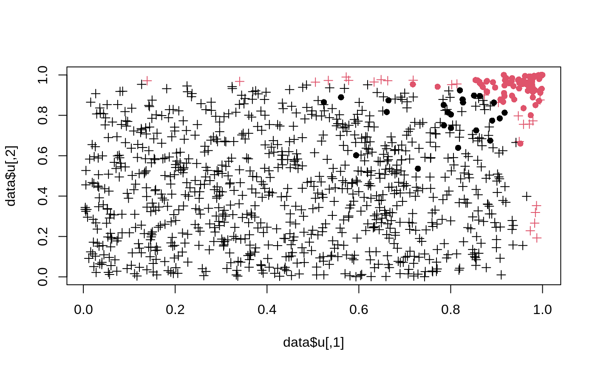

R/get.IDR2.R, R/get.idr.R, R/get.prob.R
get.IDR.RdFunctions for computing posterior cluster probabilities (get.prob)
in the general GMCM as well as local and
adjusted irreproducibility discovery rates (get.IDR) in the
special GMCM.
get.IDR(x, par, threshold = 0.05, ...) get.prob(x, theta, ...)
| x | A |
|---|---|
| par | A vector of length 4 where |
| threshold | The threshold level of the IDR rate. |
| ... | Arguments passed to |
| theta | A list of parameters for the full model as described in
|
get.IDR returns a list of length 5 with elements:
A vector of the local idr values. I.e. the posterior
probability that x[i, ] belongs to the irreproducible component.
A vector of the adjusted IDR values.
The number of reproducible features at the specified
threshold.
The IDR threshold at which features are deemed reproducible.
A vector signifying whether the corresponding feature is reproducible or not.
From GMCM version 1.1 get.IDR has been an internal function.
Use get.prop or get.IDR instead. The function can still be
accessed with GMCM:::get.idr. get.idr returns a vector where
the \(i\)'th entry is the posterior probability that observation \(i\)
is irreproducible. It is a simple wrapper for get.prob.
Li, Q., Brown, J. B. J. B., Huang, H., & Bickel, P. J. (2011). Measuring reproducibility of high-throughput experiments. The Annals of Applied Statistics, 5(3), 1752-1779. doi:10.1214/11-AOAS466
Tewari, A., Giering, M., & Raghunathan, A. (2011). Parametric Characterization of Multimodal Distributions with Non-gaussian Modes. IEEE 11th International Conference on Data Mining Workshops, 2011, 286-292. doi:10.1109/ICDMW.2011.135
set.seed(1123) # True parameters true.par <- c(0.9, 2, 0.7, 0.6) # Simulation of data from the GMCM model data <- SimulateGMCMData(n = 1000, par = true.par, d = 2) # Initial parameters init.par <- c(0.5, 1, 0.5, 0.9) # Nelder-Mead optimization nm.par <- fit.meta.GMCM(data$u, init.par = init.par, method = "NM")#> Nelder-Mead direct search function minimizer #> function value for initial parameters = 171.783273 #> Scaled convergence tolerance is 2.55977e-06 #> Stepsize computed as 0.219722 #> BUILD 5 227.072307 113.692422 #> EXTENSION 7 203.422655 80.536529 #> EXTENSION 9 171.783273 0.969765 #> LO-REDUCTION 11 125.403851 0.969765 #> EXTENSION 13 113.692422 -36.695436 #> EXTENSION 15 80.536529 -59.774697 #> REFLECTION 17 2.445024 -73.341823 #> LO-REDUCTION 19 0.969765 -73.341823 #> HI-REDUCTION 21 -36.695436 -73.341823 #> LO-REDUCTION 23 -44.519612 -73.341823 #> LO-REDUCTION 25 -59.774697 -73.341823 #> REFLECTION 27 -65.323185 -75.050504 #> REFLECTION 29 -67.858104 -75.735675 #> HI-REDUCTION 31 -69.377201 -75.735675 #> EXTENSION 33 -72.263424 -85.343583 #> LO-REDUCTION 35 -73.341823 -85.343583 #> EXTENSION 37 -75.050504 -90.646223 #> EXTENSION 39 -75.735675 -95.177646 #> HI-REDUCTION 41 -82.140512 -95.177646 #> LO-REDUCTION 43 -83.887908 -95.177646 #> HI-REDUCTION 45 -85.343583 -95.177646 #> REFLECTION 47 -89.413691 -96.366569 #> REFLECTION 49 -90.646223 -96.897874 #> LO-REDUCTION 51 -94.934992 -97.221745 #> REFLECTION 53 -95.177646 -97.685118 #> EXTENSION 55 -96.366569 -100.599712 #> HI-REDUCTION 57 -96.897874 -100.599712 #> REFLECTION 59 -97.221745 -100.606776 #> LO-REDUCTION 61 -97.685118 -100.606776 #> HI-REDUCTION 63 -98.649070 -100.606776 #> REFLECTION 65 -100.128410 -101.684845 #> LO-REDUCTION 67 -100.537253 -101.684845 #> EXTENSION 69 -100.599712 -101.993131 #> EXTENSION 71 -100.606776 -102.553812 #> HI-REDUCTION 73 -100.868522 -102.553812 #> LO-REDUCTION 75 -101.559228 -102.553812 #> HI-REDUCTION 77 -101.684845 -102.553812 #> LO-REDUCTION 79 -101.993131 -102.553812 #> EXTENSION 81 -102.018479 -102.717295 #> REFLECTION 83 -102.078186 -102.809142 #> LO-REDUCTION 85 -102.373072 -102.809142 #> REFLECTION 87 -102.553812 -102.982773 #> LO-REDUCTION 89 -102.705807 -102.982773 #> LO-REDUCTION 91 -102.717295 -102.982773 #> LO-REDUCTION 93 -102.809142 -102.982773 #> HI-REDUCTION 95 -102.858857 -102.982773 #> REFLECTION 97 -102.872474 -102.988904 #> REFLECTION 99 -102.914137 -103.035337 #> EXTENSION 101 -102.966506 -103.134041 #> LO-REDUCTION 103 -102.982773 -103.134041 #> LO-REDUCTION 105 -102.988904 -103.134041 #> LO-REDUCTION 107 -103.035337 -103.138305 #> REFLECTION 109 -103.108410 -103.175415 #> HI-REDUCTION 111 -103.122287 -103.175415 #> LO-REDUCTION 113 -103.134041 -103.175415 #> REFLECTION 115 -103.138305 -103.177946 #> EXTENSION 117 -103.145600 -103.202221 #> LO-REDUCTION 119 -103.165248 -103.202221 #> REFLECTION 121 -103.175415 -103.212280 #> EXTENSION 123 -103.177946 -103.233265 #> HI-REDUCTION 125 -103.192753 -103.233265 #> LO-REDUCTION 127 -103.202221 -103.233265 #> LO-REDUCTION 129 -103.207320 -103.233265 #> LO-REDUCTION 131 -103.212280 -103.233847 #> HI-REDUCTION 133 -103.226681 -103.233847 #> LO-REDUCTION 135 -103.228143 -103.233847 #> LO-REDUCTION 137 -103.229832 -103.233847 #> REFLECTION 139 -103.232052 -103.234894 #> REFLECTION 141 -103.233265 -103.234996 #> HI-REDUCTION 143 -103.233451 -103.235265 #> REFLECTION 145 -103.233847 -103.235912 #> LO-REDUCTION 147 -103.234894 -103.235912 #> HI-REDUCTION 149 -103.234996 -103.236298 #> HI-REDUCTION 151 -103.235265 -103.236298 #> LO-REDUCTION 153 -103.235825 -103.236298 #> LO-REDUCTION 155 -103.235832 -103.236298 #> LO-REDUCTION 157 -103.235912 -103.236298 #> LO-REDUCTION 159 -103.235974 -103.236298 #> REFLECTION 161 -103.235979 -103.236437 #> HI-REDUCTION 163 -103.236126 -103.236437 #> LO-REDUCTION 165 -103.236211 -103.236437 #> LO-REDUCTION 167 -103.236249 -103.236437 #> HI-REDUCTION 169 -103.236298 -103.236437 #> EXTENSION 171 -103.236342 -103.236483 #> REFLECTION 173 -103.236347 -103.236486 #> HI-REDUCTION 175 -103.236367 -103.236486 #> LO-REDUCTION 177 -103.236433 -103.236486 #> HI-REDUCTION 179 -103.236437 -103.236486 #> LO-REDUCTION 181 -103.236453 -103.236493 #> LO-REDUCTION 183 -103.236474 -103.236494 #> LO-REDUCTION 185 -103.236483 -103.236498 #> LO-REDUCTION 187 -103.236486 -103.236498 #> LO-REDUCTION 189 -103.236493 -103.236501 #> LO-REDUCTION 191 -103.236494 -103.236501 #> HI-REDUCTION 193 -103.236495 -103.236501 #> HI-REDUCTION 195 -103.236498 -103.236501 #> HI-REDUCTION 197 -103.236498 -103.236502 #> REFLECTION 199 -103.236499 -103.236503 #> LO-REDUCTION 201 -103.236500 -103.236503 #> HI-REDUCTION 203 -103.236501 -103.236503 #> Exiting from Nelder Mead minimizer #> 205 function evaluations used# Get IDR values res <- get.IDR(data$u, nm.par, threshold = 0.05) # Plot results plot(data$u, col = res$Khat, pch = c(3,16)[data$K])